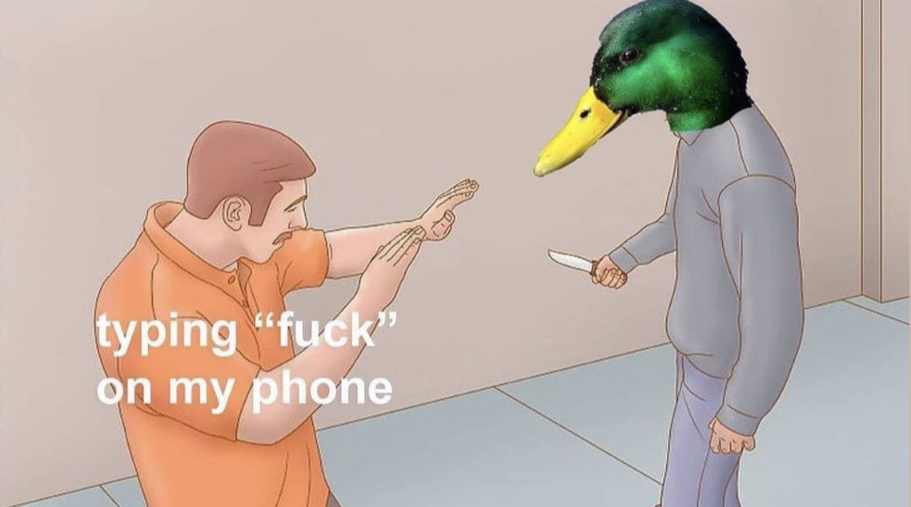
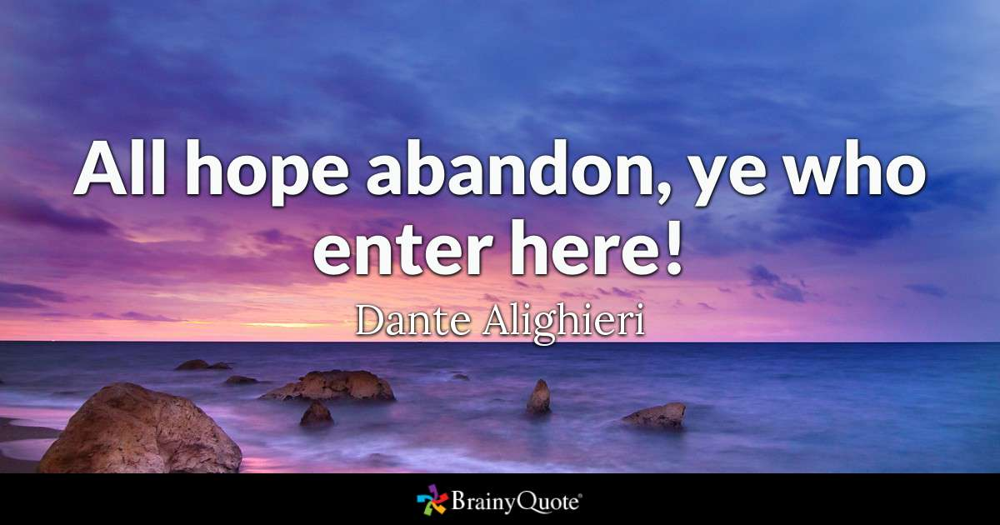

 --- # Morphology for NLP ### Will Styler - LIGN 6 --- ### Today's Plan - What is morphology? - What are words made of - Parts of Speech - New words - Word sense and Polysemy --- # What is Morphology --- ## Morphology - The study of the shape and formation of words --- ### Words are not monolithic in English - They're often made of smaller components - walk vs. walk-ed - brush vs. brush-ed - cat vs. cat-s - show vs. show-s - The recurring parts are **morphemes** --- ### Morpheme The smallest piece of a word which expresses a meaning or function --- ### Many words are composed of many morphemes - *... and each morpheme's meaning contributes to the word's meaning!* - played (play-ed) - play + past tense - cats (cat-s) - cat + plural - blacken (black-en) - black + ‘cause to become’ - unroll (un-roll) - reverse of ‘roll’ - older (old-er) - old + ‘comparative’ --- ### There are two kinds of morpheme - Bound, and Free Morphemes --- ### Free Morphemes - Can stand on their own, do not have to attach to some other form - Cat, Show, Class, Panda, Walk, Purple --- ### Bound Morphemes - Can’t stand on their own, must be attached to some other morpheme - -ed, -s, -ing, -er, un-, -aholic, twi-, cran- --- ### Bound Morphemes (or 'Affixes') - **Prefixes** - Go before the root - Re-do, Un-screw, Over-come - **Suffixes** - Go after the root - walk-ed, cat-s, end-ing - There are other kinds, but that's LIGN 120 material! --- ### Morphemes can be tricky for NLP - Morphology makes the same thing show up in different forms - "You walk", "She walks", "Marie walked", "San is walking", "Frank's a walker", but "I took three walks" - That's six different instances of 'walk', but we want to understand they mean the same thing - "Three cats", "One cat", "cat-like reflexes", "catnap", but "catastrophe" - "I see", "She sees.", "I saw the mountain", but "I saw the log in half" --- ### We need to be able to link these things - We need some way to understand that 'walks' and 'walk' and 'walking' and 'walker' and 'walked' are the same --- ## Stemming 'Let's just delete characters from words until all the forms of the word have the same form' - Will not capture 'see' vs. 'saw' vs. 'sawed' or 'try' vs. 'tried' - Does not understand that 'I saw her' is a different word than 'I bought a saw' - Stemming is *dumb*. It just removes letters according to rules --- ## Lemmatization 'Let's examine this word, look at the many morphological forms it can have, and figure out which *lemma* it's a form of. - Lemmatization requires *knowledge of individual words and their forms* - Lemmatization is much more accurate than stemming - Lemmatization is much slower, and requires other resources (like [WordNet](https://wordnet.princeton.edu/)) --- ### You'll want to lemmatize when doing information retrieval - "takes" and "took" and "take" are all semantically the same - You don't want to build a language model separately for all three - "How long would it take to walk to work?" vs. "How long would walking to work take?" - 'walk' is what's important here. --- ### So, those are morphemes - There are many, *many* kinds of morphemes - Accomplishing many tasks - ... and they're the building blocks of *words* --- # Words --- ### Words are made up of morphemes - Sometimes just one, sometimes many - ... but once constructed, words have many different types --- ### Lexical Categories - Also known as "Parts of Speech" - The *types* of words which occur in language --- ### Lexical Categories - **Nouns**: bike, car, cat, dog, tofu, dude, bling - **Verbs:** go, eat, talk, walk, yeet - **Adjectives:** lit, sweet, hot, cool, awesome - **Adverbs:** well, fast, slowly, easily - **Pre/postpositions:** with, from, on, in --- ### Lexical Categories (Continued) - **Determiners:** the, a, that, this, those - **Pronouns:** she, he, him, her, it, I, you, they - **Conjunctions:** and, or, whenever, while - **Numeral:** one, twice, third - **Interjection:** ouch, tsk, damnit! --- ### How do we identify the different parts of speech? - These generalizations will work for English, but similar ones are available --- ### Nouns - Describe a person, place or thing - Can be singular or plural - book/books or car/cars, but not quickly/ *quicklys and beg/ *begs - red/reds? - Can be paired with a determiner (e.g. "I like the/a...") - I like the book/car/cat/show - * I like the angry/rotate/beg/quickly --- ### Verbs - Can take tense marking in English - He rotates, she rotated - He learns, she learned - *He angrys, *He angryed - Can work with modals - I will fly, but *I will angry. - I can run, but *I can cat. --- ### Adjectives - Comparative Constructions - Happy/Happier, but *learn/learner - Angry/Angrier, but *cat/cater - Superlative Constructions - Mad/Maddest, but *commute/commutest - Purple/Purplest, but *penguin/penguinest - Very/too Constructions - Very bad, very angry, very purple, very ugly - *Very learn, *Very cat, *Very linguist --- ### There are always some exceptions - Words can be used as other categories - "You look very... linguist today" - "That's pretty fly" - "I can't adult right now" - Words that don't fit the pattern - *She looks much eleganter - *I cutted the bush - *Three sheeps ran across the path --- ### Adverbs are hard - "the most nebulous and puzzling of the traditional word classes” - (Quirk, Greenbaum, Leech, & Svartvik, 1985) - They can modify anything non-nominal -  --- ### There are many flavors of adverbs - **Temporal**: Now, then, yesterday, always, tomorrow, next week - **Locative**: Here, there, abroad - **Sentence**: Perhaps, fortunately, honestly, frankly - **Manner**: Quickly, carefully, excitedly, beautifully - **Linking**: Therefore, thus, consequently - **Degree**: Very, too, extremely --- ### Prepositions - Indicate a semantic relationship between other entities - "Any relationship a squirrel can have with a tree" - Under, around, on top of, behind, near, adjacent to, below, above, in, on... - These don't change form in English --- ### Pronouns - Substitute for noun phrases - "I saw the gal who Kati noticed was carrying a hamster in her backpack" - "I saw **her**" --- ### There are many kinds of pronouns - Personal Pronouns - 1st Person (I, me, mine), 2nd person (You, Yours), 3rd (she/her/hers, he/him/his, them/them/theirs, and others) - Indefinite Pronouns - Someone, everybody, nobody, any, anything, something - Interrogative Pronouns - "You saw who/what where/when?" - Relative pronouns - "I saw the girl **who** knew the cat **that** ate the bird **which** I was watching." - Demonstrative pronouns - This, these, that, those --- ### Determiners - Determiners mark and precede nouns - **The/an** interesting book - **Those** cookies - **Which** movie did you see? - Determiners don't vary in form --- ### Types of Determiners - **Possessive**: My, your, her, our, his, its, their - **Demonstrative**: This, these, that, those - **Interrogative**: which, what, whose - **Definite**: the - **Indefinite**: a/an --- ### Conjunctions - Used to link expressions - Sunny **and** warm - Red **or** blue? - He rolled over **while** I was petting him. --- ### All languages have grammatical categories - Although the lines between them can be blurrier or cleaner - ... and some languages don't necessarily use all of them --- ### We'll talk about how to automatically detect Part-of-Speech soon - ... but for now, know it's there. --- ### We can group these categories into larger sets - Nouns, Verbs, Adjectives, Adverbs are **content words** - A very large set of words, which express new meanings - Pre/Postpositions, Determiners, Pronouns, Conjunctions are **function words** - A small, finite set of words which help combine other words --- ### Content and Function words change differently in languages - We very rarely gain new **Function words** (Pre/Postpositions, Determiners, Pronouns, Conjunctions) - We often gain new **Content words** (Nouns, Verbs, Adjectives, Adverbs) - Function words are a **closed class**, and content words are an **open class** --- ### New function words are pretty rare - "I didn't see The Island **because** Michael Bay" (new preposition) - "I spent last night in the library doing homework **slash** looking at pictures of cats" (new conjunction) --- ### New content words are really common - Simp (Noun/Verb) - Poggers (Adjective) - Mid (Adjective) - Totes (Adverb) - uwu (Interjection) --- ### ... and existing words can gain new uses - Flex - Diamond Hands - Tea - Drop - Slay - Facts/Fax --- ### This brings up a major problem for us - Words can have different 'senses' which are different parts of speech - These are classically called 'Homonyms' --- ## Homonym A word which shares the same spoken and written forms, but has a different meaning - e.g. Bank (river)/Bank (institution), Mug (coffee)/Mug (street robbery), Phone (iPhone)/Phone ([t] or [ŋ]) - This is different from *homophones* (e.g. "banned/band") because the spelling is the same - This brings up a problem that will haunt us throughout the quarter --- ## Polysemy The fact that one word can have many different meanings --- ### Word Sense The specific meaning of a word being used in a given situation --- ### Many words have multple senses - ... and those senses can have different parts of speech. --- ### Fit - She fit the package into the over-full trunk - She's fit to work on your project, given her background - She's having fits about the new deadline - She's quite fit for her age - That fit nicely into my schedule - She fits in well in San Diego - Damn, he's *fit* --- ### Speaking of words having different meanings... - What about when words have different meanings in conjunction? - "bread chasing" - "shut down" (vs. "shut up", "shut out", "shut in"...) - "thank u, next." - "on the down low" - "down bad" --- ### Multi-Word Expressions - When a group of words combine to have a meaning different from their compositional sum - Similar to an 'idiom', but less rigidly defined. - These present *huge* problems for NLP - "I got down low to pet the puppy" vs. "Let's keep this on the down low" --- ### So, written words can have many different parts of speech - ... and many different meanings indistinguishable by form - ... and combinations of words can mean something different too - ... and none of this can be discovered from written form alone ---  --- (Nah, it's OK, we've got syntax) --- ### Wrapping up - Many words are made of smaller component morphemes - We need to consider many forms of words, and unite them - Words are of many different types or 'Parts of speech' - New words are a regular occurrence - ... and individual words can mean many different things --- <huge>Thank you!</huge>